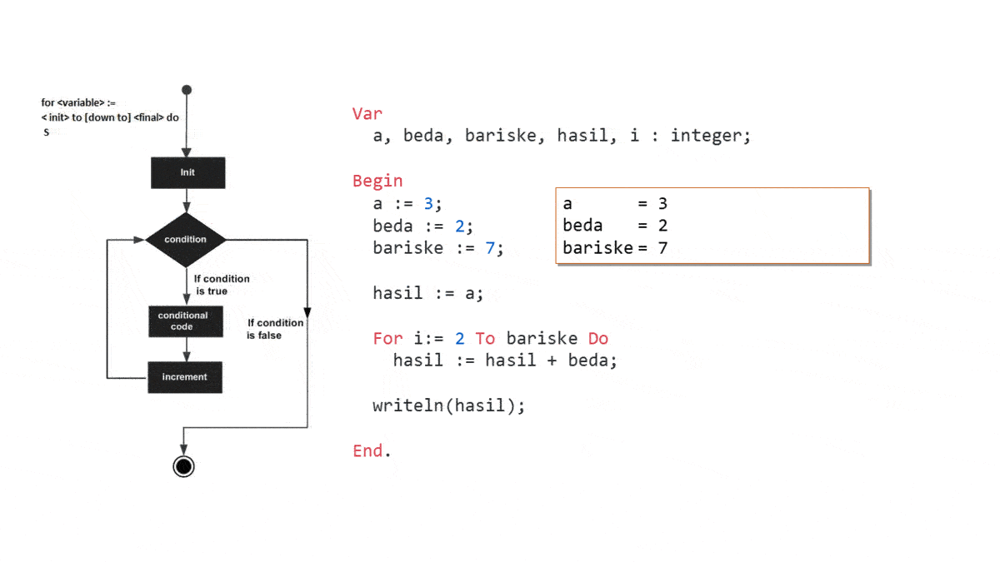

3, 5, 7, 9, 11, 13, 15, ... Berapa baris ke-7 ?Langkah paling mudah, yaitu tinggal pake coret2 aja kan... Catat! "Solusi 1". Kedua, pake rumus barisan... "Solusi 2".
+2 +2 +2 +2
3, 5, 7, 9, ...
a + (( n-1 ) b )
Lalu bagaimana solusi komputernya? Siapp... biasakan selalu pakai coret2 dulu sebelum bikin program ya... OK?
Pertama, tentukan nilai pertama atau "a" lalu buat variabel "hasil" dan tetapkan "hasil" = "a", tambah-tambahkan "hasil" dengan "beda" sampai tercapai "hasil" ke-sekian.
Masuk ke koding nih mas... Dibuat sesuai breakdown ya...
koding tersedia di folder snippet
Var
a, beda, bariske, hasil, i : integer;
Begin
a := 3;
beda := 2;
bariske := 7;
hasil := a;
For i:= 2 To bariske Do
hasil := hasil + beda;
writeln(hasil);
End.
Karena enggak ada "hasil" ke-0. Dan karena "hasil" ke 1 = "a" sudah ditetapkan di langkah ke-3 maka "hasil ke-1 sudah dihitung. Lanjut ke "hasil" ke-2.
For := To Do cara kerjanya gimana?
Gampang... buat rumus, masukin angka, jadi deh...
Var
a, beda, bariske, hasil : integer;
Begin
a := 3;
BEDA := 2;
baRisKe := 7;
{ Rumusnya: a + (( n-1 ) b) }
hasil := a + (( bariske - 1) * beda);
writeln(hasil);
End.
(* Tanda "{}" dipakai untuk buat komen sebaris,
sedangkan tanda kurung bintang yg dipakai di
paragraf ini untuk buat komen berbaris-baris. *)
Pascal is a case non-sensitive language, which means you can write your variables, functions and procedure in either case. Like variables A_Variable, a_variable and A_VARIABLE have same meaning in Pascal.
Paham kan... 😉
Pascal - Environment Setup ✔ [Link materi 1]
Pascal - Program Structure ✔ (partial)
Pascal - Basic Syntax
Variables ✔ (partial)
Comments ✔
Case Sensitivity ✔
Pascal - Variable Types
Pascal - Operators
Pascal - Loops